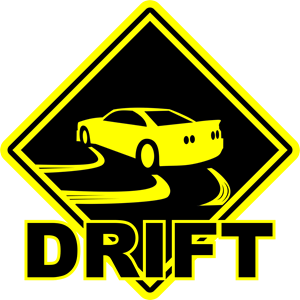

Моё хобби это "Дрифт"

Дрифт, он же дрифтинг ‐ особая техника прохождения поворотов на автомобиле в управляемом заносе. Это, прежде всего, демонстрация наивысшего контроля над машиной и мастерства пилотирования. Техника дрифта схожа с раллийной, но выполняется исключительно на заднеприводных автомобилях и на асфальте, за счет чего и достигается тот самый популярный эффект дыма из‐под колес и пронзительный визг покрышек.
Вот то хобби к которому я стремлюсь. Пока что являюсь только фанатом, но мечтаю и себе построить "дрифт-корча" и участвовать в соревнованиях :)